A collection of things that I’ve built and shipped - packages, small web apps, and the odd game. Most of them started as tools for my own use, and all of them are open source.
My packages
I’ve authored several R packages, which are all available on GitHub:
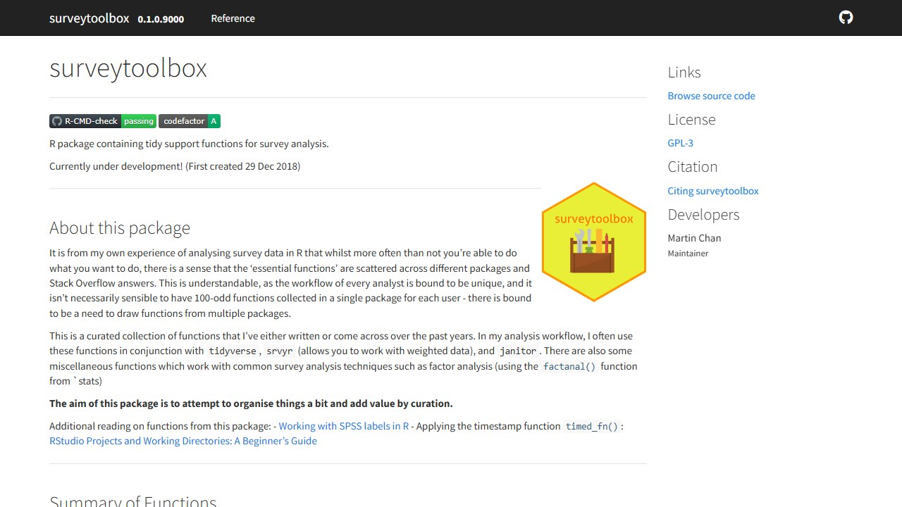
surveytoolbox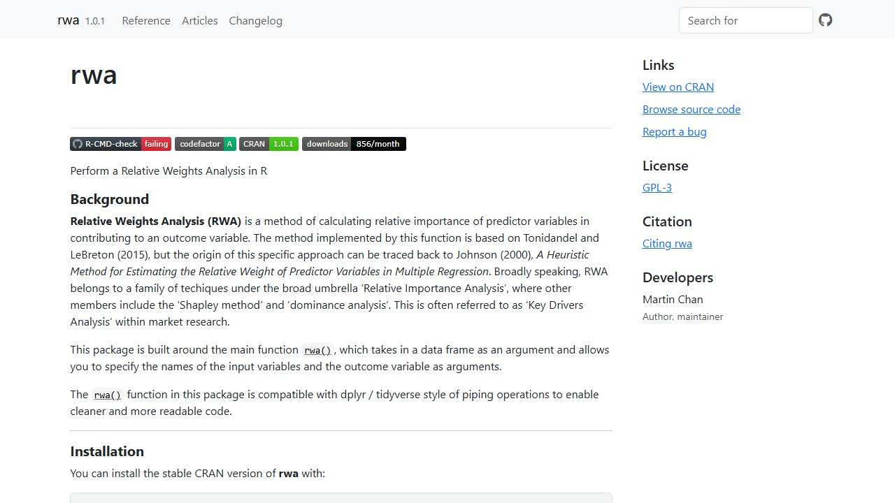
rwa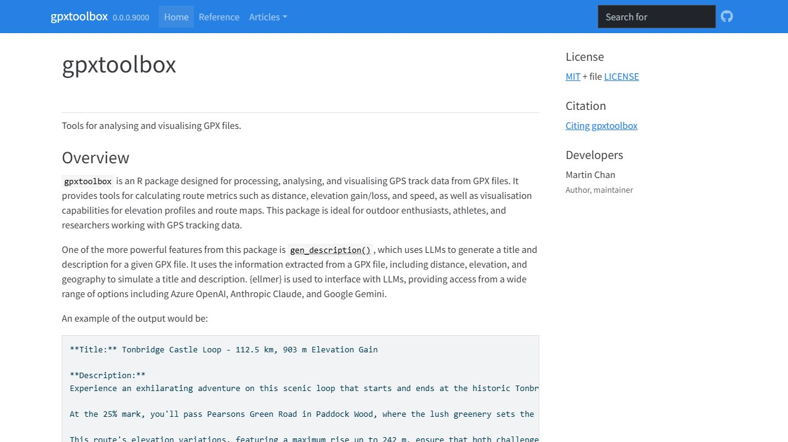
gpxtoolbox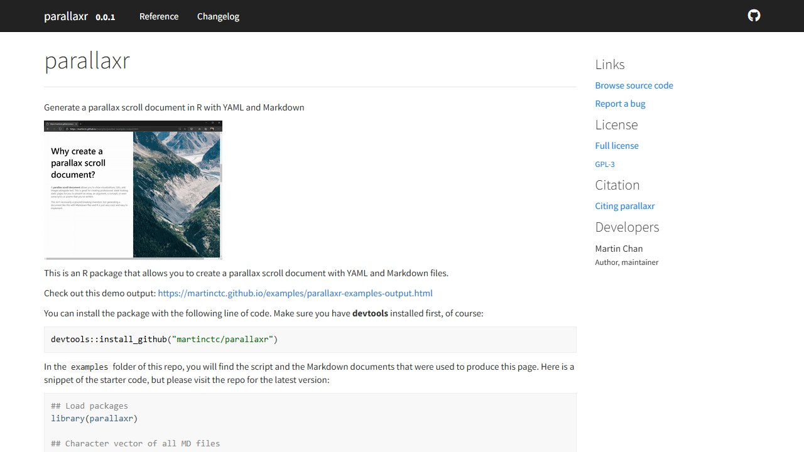
parallaxr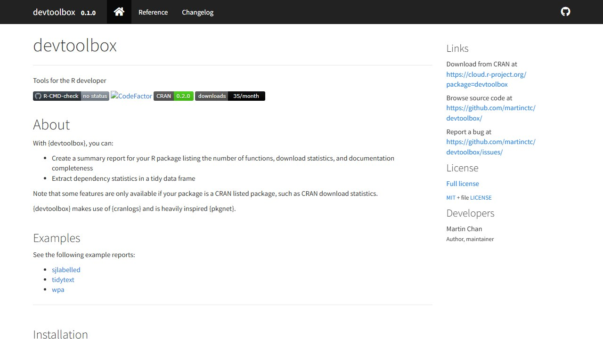
devtoolbox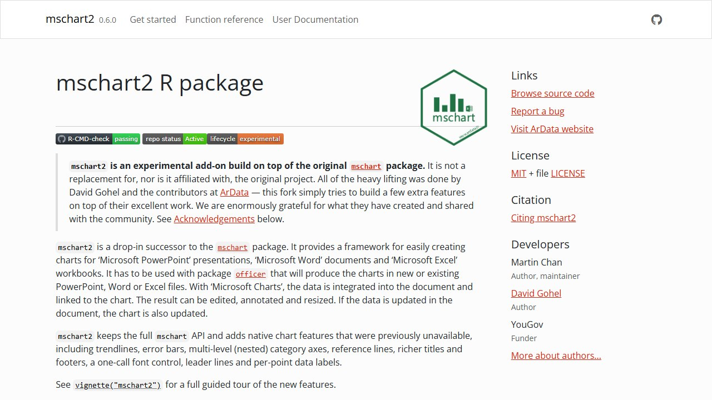
mschart2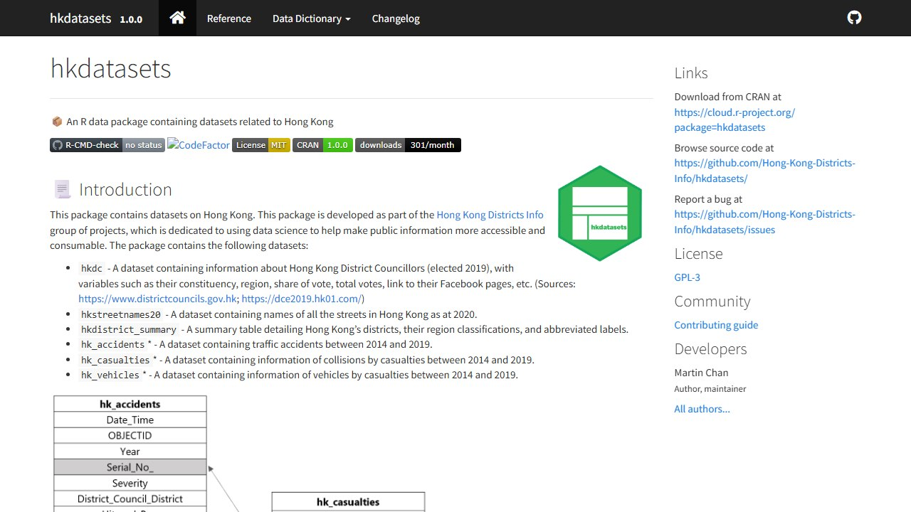
hkdatasetsMost of these packages were to some extent “by-products” of the analysis that I’ve been doing for the last couple of years, which I decided would have greater value developed into packages.
In addition, I maintain the following packages as part of my work with Microsoft Viva Insights:
Vibe-coded projects
Alongside R packages, I’ve recently been building small web apps and tools through “vibe coding” — quick, exploratory builds where I use AI-assisted development to turn an idea into a working tool as directly as possible. These are typically self-contained, browser-based, and built for a specific real-world need of mine.
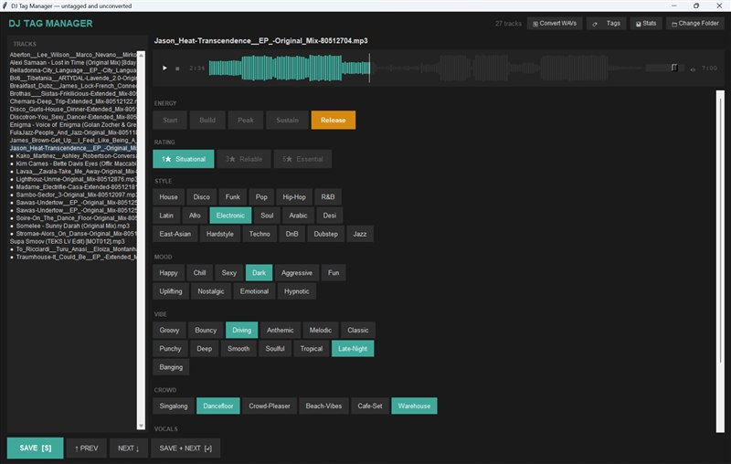
Track Tag Manager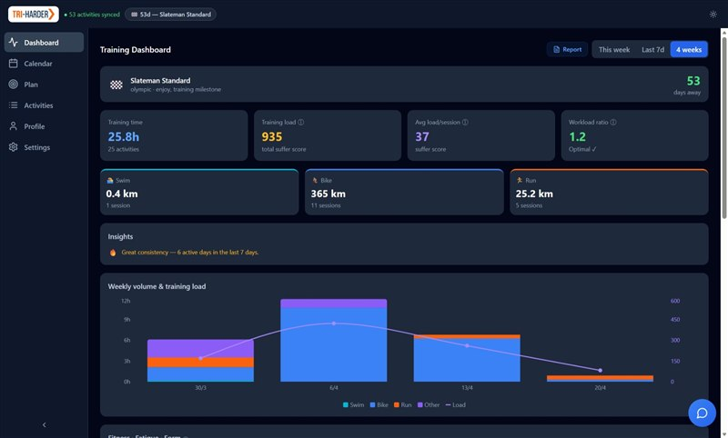
Tri Harder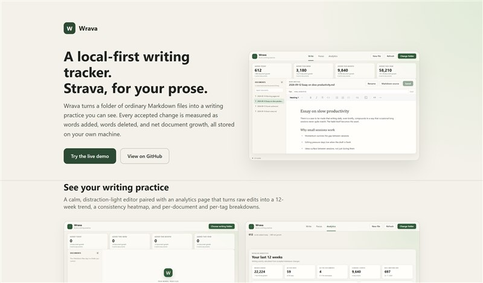
Wrava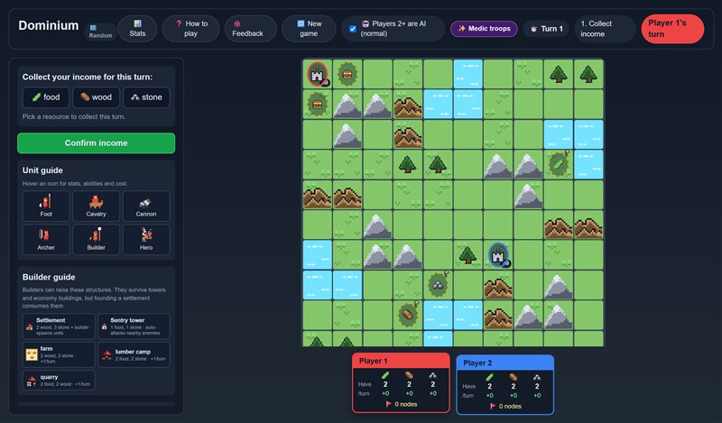
Dominium OpenCode Dashboard
OpenCode Dashboard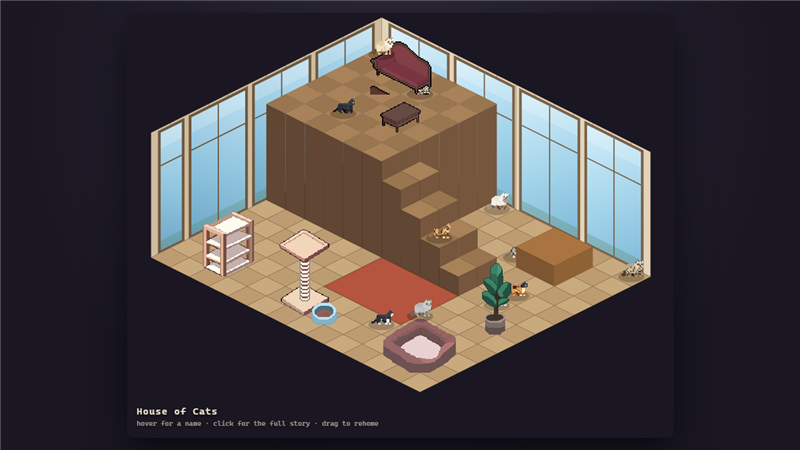
House of Cats Interval Tracks
Interval TracksFor a closer look at each of these projects, I’ve written up the ideas and thinking behind them on the vibe-coded projects page.
Blogs
On this same site you can find my blog, where I write about things related to #rstats and data science. I contribute my blogs to r-bloggers, R Craft, and R Weekly, which you can find as an example two of my blogs featured in the 2019 Week 17 update on R Weekly. My post on the state of R artefacts is also selected as the highlight post of 2019 Week 27 on R Weekly.
Highlight posts
RStudio Projects and Working Directories: A Beginner’s Guide - a starter guide on setting up effective, collaboration-friendly directories - a must read for beginners in R. Special thanks to Chu Kyoyoung for translating this post into Korean.
Using data.table with magrittr pipes: best of both worlds - a post on combining the strengths of the wildly popular tidyverse and the blazing fast data.table packages
LondonR: Hadley Wickham & tidyverse’s greatest hits - a post covering the highlights of Hadley Wickham’s presentation at LondonR in August 2019.
EARL Conference 2018
Enterprise Applications of the R Language Conference (London)
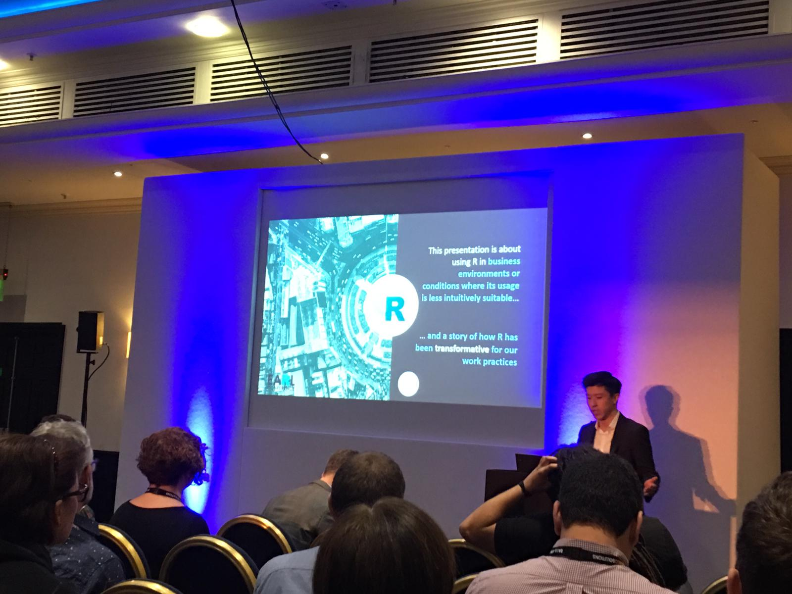
I presented at the EARL Conference 2018 on the challenges of using R for market research, and outlining some of the packages and approaches that help overcome these challenges.
Check out my blog on using R for market research and strategy planning below:
Swiss Army Knife for Strategy Planning
Interview with Jonathan Ng
A YouTube Interview on R, Data Science, and Market Research
Jonathan Ng is a best-selling instructor and Data Scientist who interviewed me on how I use R in a market research and consulting environment, and my personal journey from Excel to R. Check out the full interview here: